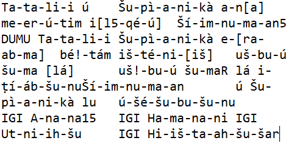
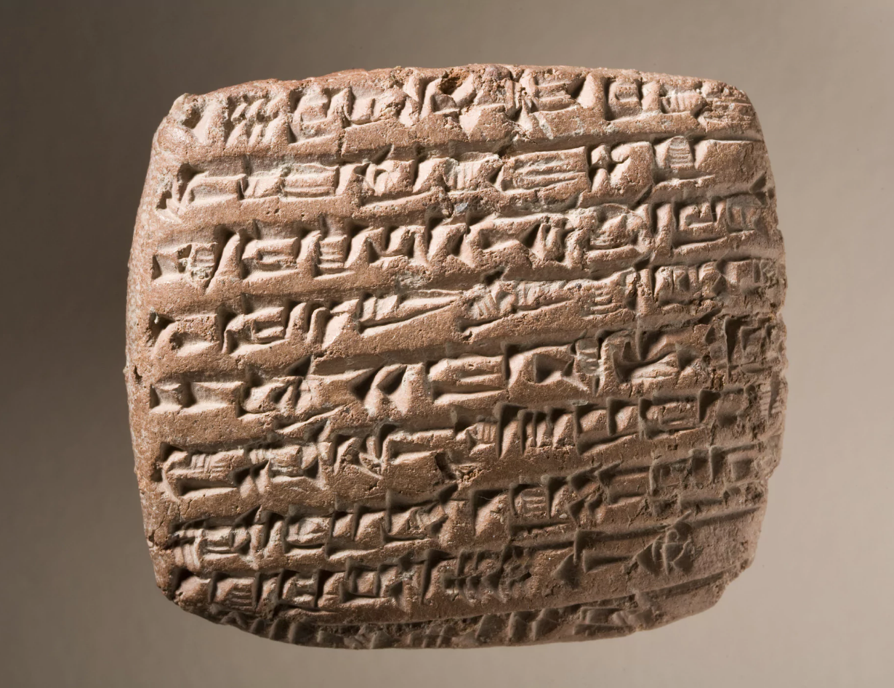
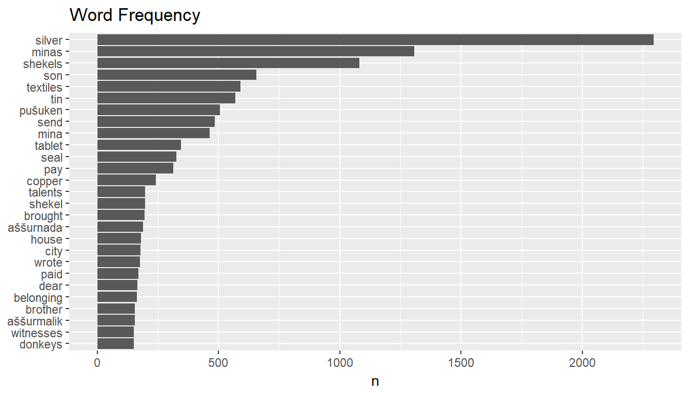
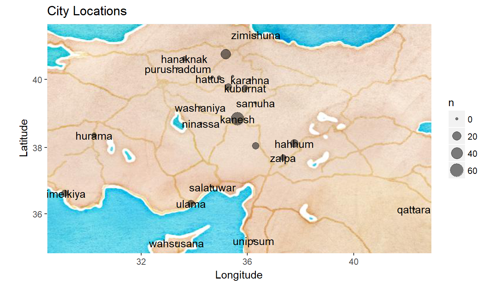

2018.27.02
I analyze a large dataset of commercial records produced by Assyrian merchants in the 19th Century BCE…
this is how the language sounded like…
2018.01.03
And this is how it looked like:

2018.02.03
Some smart people decrypted these languages. For example
nu ninda en e-iz-za-te-ni wa-a-tar-ma e-ku-ut-te-ni
Translation:
“Now you will eat bread and drink water”
wa-a-tar means water. ninda means bread. Quite familiar isn’t it?
Our data looks like this:
This is a txt file.

But how did I get here? It started with a tweet by Gabor Bekes:

I contacted the authors of this academic paper from the University of Virginia. They were so kind and provided me these text files:

Archeologists have escavated these tablets during the past 200 years.
An escavated tablet looks like this:

These people lived 4000 years ago in the Middle East and the Asia Minor
2018.03.05
We will need to get rid of many words and phrases. Some simple regular expressions will help us. For example:
#Load the sample data
library(dplyr)
txt <- readLines("OARE.txt") %>%
data_frame(file = 'OARE') %>%
rename('word' = '.')
#see the lines give the information regarding the Creator of the record
head(txt[grep('^Creator', txt$word),], 3)## # A tibble: 3 x 2
## word file
## <chr> <chr>
## 1 Creator(s): Stratford, Edward P. OARE
## 2 Creator(s): Stratford, Edward P. OARE
## 3 "Creator(s): Stratford, Edward P. (2016-12-24) " OARE#removing them
txt <- txt %>%
anti_join(txt[grep('^Creator', txt$word),])This is one way of cleaning such unwanted words… We can create a list of them.
2018.03.06
This is how the list of unwanted words look like. We remove them just like we did above
toMatch <- c("^Primary", "^Translation", "^logosyllabic", "^Epistolary", "^Formul", "^Creator",
"^Editor", "^List", "^Introductory","^Publication", "^Physical" ,"^Chantre",
"^German", "^French ", "^Topic", "^“Kuzuoğlu", "^Body", "^Kayseri ",
"^Periods", "^Kültepe", "^Karaduman", "^Kültepe", "Adana","^Seizure",
"^Bılgıç", "^First Topic", "^AnOr", "^Garelli", "^Liège", "^Prag",
"^Ulshöfer", "^Burrill", "^Burton", "^Cole ", "^Eilsberger", "^hellbraunes",
"^Stratford", "^Rendell", "^Schaeffer", "^Struwe",
"^AAA", "^A ", "^Ac.", "^ATHE", "^BIN", "^AKT", "^AO", "OARE", "^ ", "^KTB ",
"^C ", "^CCT", "^CKAS", "^CTMMA", "^EL ", "^H.K. ", "^ICK ", "^JCS ", "^kt ",
"^KTH ", "^KTS ", "^KUG ", "^¢", "^LB ", "^OIP ", "^POAT ", "^RA ", "^TC ", "^TMH ",
"^TTC ", "^VS ", "^YBC ")
matches <- unique (grep(paste(toMatch,collapse="|"),
txt$word, value=TRUE))
#removing them
txt <- txt %>%
anti_join(data.frame(word = matches))
original_text <- txt # keep an untouched copy
#take a look at one commercial record now
txt[148:155, 1]## # A tibble: 8 x 1
## word
## <chr>
## 1 Requesting a service
## 2 "4-6I entrusted 15 minas 54 shekels silver under my seal, 16 shekels it~
## 3 "7-8There, make sure the representative of Al-ili recieves the silver a~
## 4 "11-13The seal of the merchant at the opening of the package is marked ~
## 5 Requesting a service
## 6 "13-14To Idnaya and La-qepum: 15-17Get the silver and let it come with ~
## 7 "24-31Take the package there and give it to those who go to the city fo~
## 8 "31-33Let your message come that your received the silver and the packa~Here we are reading a business letter from a guy called Abela to Idnaya. Just a quick look makes it clear that these people were not savages at all. Freight charges, clearing a debt on behalf of another entity and stamps (seals) are all in place.
The paragraph is almost clean. Next, we need to remove the numbers.
2018.03.07
# Remove numbers using removeNumber function from tm library
library(tm)
txt$word <- txt$word %>%
removeNumbers() %>%
removePunctuation() %>% #in fact unnest_tokens function is handling this
stripWhitespace()Now let’s have a quick look at the word frequencies
library(tidytext)
library(ggplot2)
library(ggthemes)
txt %>%
unnest_tokens(word, word) %>%
anti_join(stop_words) %>%
count(word, sort = TRUE) %>%
filter(n > 150) %>%
mutate(word = reorder(word, n)) %>%
ggplot(aes(word, n)) + geom_col() + xlab(NULL) + coord_flip() +
ggtitle("Word Frequency")
It looks like these people were sending and receiving textiles, tin and copper. Transportation was mostly depending on donkeys and the payments were in silvers most of the time. The units of measurement (like the weight) were shekels, minas and talents. Example: Abele sends 5 minas of textile to Ibalaya for 20 shekels of silver, on behalf of Iddin-Istar.
2018.03.08
Looking at the frequency plot again, what does pusuken mean? It is repeating more than 500 times…
library(stringr)
head(original_text[str_detect(original_text$word, "Pušu-ken"), 1], 5)## # A tibble: 5 x 1
## word
## <chr>
## 1 "1-3To Amur-Ištar and Pušu-ken from Kuzallum: "
## 2 "1-2From Šu-Hubur to Pušu-ken: "
## 3 "1-7Zupa seized us against the sons of Pušu-ken and Zupa said to the so~
## 4 "7-9Why is it that Suen-re'i detains me? 10-18The sons of Pušu-ken (res~
## 5 "51 1/2 shekels (to?) Ahu-waqar. 6x shekel(s) (to?) Pušu-ken. 72 shekel~A family business! It turns out Pushuken was the most famous businessman. Probably he was the leader of a powerful family controlling most of the trade happening in the region. His sons were handling the transactions. Assurnada and Assurmalik are the other two notable tradesmen coming out from the frequency table.
Another frequent word is ‘son’. Let’s find out why.
tail(original_text[str_detect(original_text$word, "son"), 1], 5)## # A tibble: 5 x 1
## word
## <chr>
## 1 Iddin-Ištar son of Aššur-nada owes 5 5/6
## 2 " 13-15The month Te'inatum, eponymy Alahum son of Inah-ili. 16-18Witne~
## 3 "15-18Witnesses: Burqanim son of Kakkabanim son of Šu-Ištar son of Šuay~
## 4 "3-5Aššur-malik son of Erraya brought your silver -- 15 minas silver. 5~
## 5 "18-28Its value in silver 1 mina 5 shekels, 3 shekels- the feed of the ~son of Assurnada, son of Inahili, son of Iddin… Of course, these are family names. That’s why it repeats a lot.
2018.03.10
Now we have a fairly good understanding of the most frequent words. Let’s get a big picture of the ancient cities mentioned in our text.
Ancient city names are easily available online. We will join them with our text. Our onjective is to see how many times these cities are mentioned in our text and visualize them.
library(tidyr)
cities <- cities %>%
left_join(original_text %>%
unnest_tokens(word, word) %>%
filter(word %in% tolower(cities$cityName)) %>%
count(word, sort = TRUE) %>%
rename(cityName = word),
by = 'cityName')
cities$n <- replace_na(cities$n, 0)cities %>%
select(cityName, latitude, longitude, n) %>%
rename(Occurance_In_Text = n) %>%
arrange(desc(Occurance_In_Text)) %>%
head() %>%
pander::pander()| cityName | latitude | longitude | Occurance_In_Text |
|---|---|---|---|
| kanesh | 38.85 | 35.64 | 61 |
| durhumit | 40.73 | 35.18 | 27 |
| hahhum | 38.13 | 37.78 | 15 |
| tuhpiya | 39.79 | 35.27 | 10 |
| ulama | 36.32 | 33.87 | 9 |
| mamma | 38.05 | 36.3 | 9 |
The city of Kanesh is our biggest hub. Probably a capital city. Our famous Pusheken family must have been lived here.
library(ggmap)
library(ggthemes)
lat <- cities$latitude
long <- cities$longitude
bbox <- make_bbox(long,lat,f=0.5)
b <- get_map(bbox,maptype="watercolor",source="google")
ggmap(b) + geom_point(data = cities,
aes(longitude, latitude, size=n),alpha=0.5) +
labs(x = "Longitude", y = "Latitude",
title="City Locations. Size = Occurance in Text", color = "Type") +
geom_text(data = cities, aes(longitude, latitude, label = cityName),
check_overlap = TRUE, nudge_y = -0.5) 
#xxxxxxxxxxxxxxxxxxxxxxxxxxx